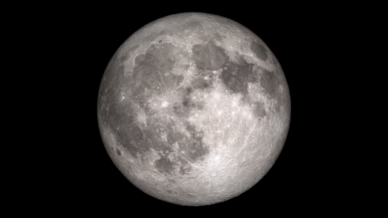

Astronomie antique
CEA Explorer et comprendre l’Univers
6 février 2020
 Trustees of the British Museum
Trustees of the British Museum
Mésopotamiens et astrologie
- Développement des mathématiques
- Observations astronomiques détaillées
- Motivation pour l’étude des astres?
Certains astres ont une influence sur la Terre
Les astres ont une influence sur la destiné des rois

Observations mésopotamiennes
- Observations systématiques de la Lune et du Soleil
- Position des planètes par rapport aux constellations
- Mesure des positions des planètes par rapport au Soleil
Rappels
- Les étoiles ne se déplacent pas les unes par rapport aux autres
- 7 astres errants : Soleil, Lune, Mercure, Vénus, Mars, Jupiter, Saturne
- Les astres errants se déplacent dans les 12 constellations du zodiaque (le long de l’écliptique)
Deux sortes d’astres errants
Planètes inférieures
Planètes supérieures
Planètes inférieures
- Mercure et Vénus
- Se déplacent avec le Soleil
- Position par rapport au Soleil varie entre deux élongations maximales
Planètes inférieures

Planètes supérieures
- Mars, Jupiter, Saturne
- Planètes qui sont parfois en opposition avec le Soleil
- Peuvent occuper toutes les positions par rapport au Soleil
Planètes supérieures

| Lune |
27,3 jours |
| Mercure |
1 an |
| Vénus |
1 an |
| Soleil |
1 an |
| Mars |
2 ans |
| Jupiter |
12 ans |
| Saturne |
30 ans |
En première approximation, les astres errants
- se déplacent tous d’ouest en est par rapport aux constellations du zodiaque
- ont une vitesse constante
Observations plus raffinées
- Les planètes ont parfois un mouvement rétrograde
- La vitesse de chaque planète n’est pas constante : préférence zodiacale
Mouvement rétrograde
 Stellarium
Stellarium
La Terre est une sphère
- Fait connu à partir de 400 av. J.-C. (puis oublié pendant le Moyen-Âge)
- Observations :
- Mat d’un voilier disparaît après la coque
- Ombre circulaire de la Terre sur la Lune lors d’éclipses de Lune
- Changement de l’apparence du ciel selon la latitude
Tout cela est correct

NASA Goddard Media Studios

 Stellarium
Stellarium
Conclusion (incorrecte) des grecs :
L’Univers est une série de sphères centrées sur la Terre
- C’est le modèle géocentrique
Aristote
350 av. J.-C.

Aristote
- Le cercle est la figure parfaite! (Platonique)
- Sphères en mouvement circulaire uniforme
- Centre : Terre, Eau
- Ciel : Air, Feu
- Éther : Étoiles
Aristote

Hipparque
150 av. J.-C.

Hipparque
- Propose une explication du mouvement rétrograde des planètes
- Planète se déplace sur un épicycle qui lui-même se déplace sur un déférent
Hipparque

 Image de droite : Paul Chabot
Image de droite : Paul Chabot
Claude Ptolémée
IIe siècle

Ptolémée
- Reprend l’idée des épicycles
- Ajoute : équant, Terre décentrée
Ptolémée explique
- le mouvement rétrograde
- la préférence zodiacale
- les positions des astres errants avec une précision de l’ordre de 5°
Ptolémée n’explique pas
- les contraintes bizarres sur le segment centre de l’épicycle - planète
- centre de l’épicycle des planètes inférieures sur l’axe Terre-Soleil
- axe centre de l’épicycle-planète supérieure parallèle à l’axe Terre-Soleil


{kind=link}
.JPG){kind=link}